Fitness models¶
Unless otherwise specified, the fitness of a diploid will typically be calculated according to an “additive” model or a “multiplicative” model. For a particular position with two segregating alleles, there are three possible genotypes, AA, Aa, and aa, which represent the non-mutant homozygote, the heterozygote, and the mutant homozygote respectively. For ‘standard’ models in population-genetics, a mutation typically has a ‘selection coefficient’, s, which you can think of as the amount by which a mutation changes the reproductive success of a genotype, and h, which is a modifier of the mutation’s effect on fitness in a heterozygote.
The standard models of fitness in population genetics are either additive:  , where
, where  is 0,
is 0,  , or 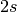 for genotypes AA, Aa, and aa, respectively, or multiplicative: 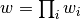, , where is 1,
, or 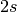 for genotypes AA, Aa, and aa, respectively, or multiplicative: 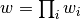, , where is 1,  , or
, or  for genotypes AA, Aa, and aa, respectively. The former approximates the latter for small
for genotypes AA, Aa, and aa, respectively. The former approximates the latter for small  .
.
For better or worse, these are the standard models of population genetics and the scalings of fitness in the above table are the same ones used to give classic results on fixation probabilities, times to fixation, etc. For further information, please consult Crow and Kimura (1970).
Theoretical details¶
In the absence of natural selection, the distribution of levels of variation (number of mutations, frequencies, correlation amongst mutation frequencies, etc.) are governed by two parameters, 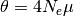 and 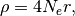 where :math`N_e` is the “coalescent effective size” of the population (Sjodin et al., 2005),  is the mutation rate (per gamete, per generation, to mutations that do not affect fitness and occur according to an the infinitely-many sites scheme of Kimura, 1969), and
is the mutation rate (per gamete, per generation, to mutations that do not affect fitness and occur according to an the infinitely-many sites scheme of Kimura, 1969), and  is the rate of crossing over in the region (per diploid, per generation). I suggest that readers consult Wakeley, 2009, as a starting point for understanding what these parameters imply about expectations for samples, etc., under various models.
is the rate of crossing over in the region (per diploid, per generation). I suggest that readers consult Wakeley, 2009, as a starting point for understanding what these parameters imply about expectations for samples, etc., under various models.
In a forward simulation, you need to pick an  , which is your diploid population size. You also need to have some idea of how large a
, which is your diploid population size. You also need to have some idea of how large a  and
and  to use. This can be a complex issue (more on that below), but we’ll do some back-of-the-envelope stuff here. The following table present the average number of differences per nucleotide (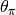 per site) between two individuals in the two most important species on the planet:
to use. This can be a complex issue (more on that below), but we’ll do some back-of-the-envelope stuff here. The following table present the average number of differences per nucleotide (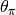 per site) between two individuals in the two most important species on the planet:
- Humans, where nucleotide diversity per site is 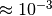
- Drosophila melanogaster (from N. America), where diversity per site is 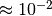
Thus, if you choose an and a neutral mutation rate such that 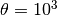, then that value correponds to approximately 1 megabase in “humans” and 100 kilobases in “flies”.
The relationship between forward-time and backward-time (coalescent) simulations.¶
The reason why we go through all of the business above is because someone using this package may wish to compare to the results of coalescent simulations that run backwards in time. In a forward simulation where changes over time, it is easiest to parameterize everything in terms of the and at the _beginning_ of the simulation. However, a coalescent simulation like ms treats treats as 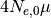, where 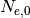 is the coalscent size at time 0 in the past (which is also known as the present). Thus, if you simulate a model with changing population sizes using this package and want to compare it to the output of something like ms, then you should be prepared to do a little math to adjust , etc., so that the parameters are indeed comparable.
References¶
- Crow, J. F., & Kimura, M. (1970). An introduction to population genetics theory. An Introduction to Population Genetics Theory.
- Kimura, M. (1969). The number of heterozygous nucleotide sites maintained in a finite population due to steady flux of mutations. Genetics, 61(4), 893-903.
- Thornton, K. R. (2014). A C++ Template Library for Efficient Forward-Time Population Genetic Simulation of Large Populations. Genetics, 198, 157-166. http://doi.org/10.1534/genetics.114.165019
- Sjödin, P., Kaj, I., Krone, S., Lascoux, M., & Nordborg, M. (2005). On the Meaning and Existence of an Effective Population Size. Genetics, 169(2), 1061-1070. http://doi.org/10.1534/genetics.104.026799
- Wakeley, J. (2009). Coalescent Theory. Roberts & Company Publishers.